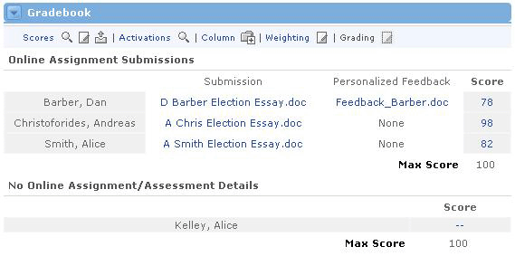

View Submissions for an Assignment
This will allow you to see which enrolled users have submitted an assignment or exam for any specific column. To do this, follow these steps:
- In the Gradebook channel's main view, locate the column for the assignment and/or exam submissions that you would like to see.
- Click the radio button beneath the column OR select the column from the drop-down menu at the bottom of the Gradebook channel. By selecting the column in either of these methods, the alternate method will automatically be selected as well.
- Once your column is selected, click the Submissions link at the bottom of the Gradebook channel.
- You should now see that the Gradebook channel has been broken into two parts. The top part lists all of the enrolled users who have submitted an assignment or assessment for this column. Click the link to the right of a names to view that user's submission.
- The lower part of the Gradebook channel now lists all the enrolled users who haven't yet submitted this assignment or exam.
- Click the magnifying glass icon at the top of the channel to return to the main Gradebook view.
